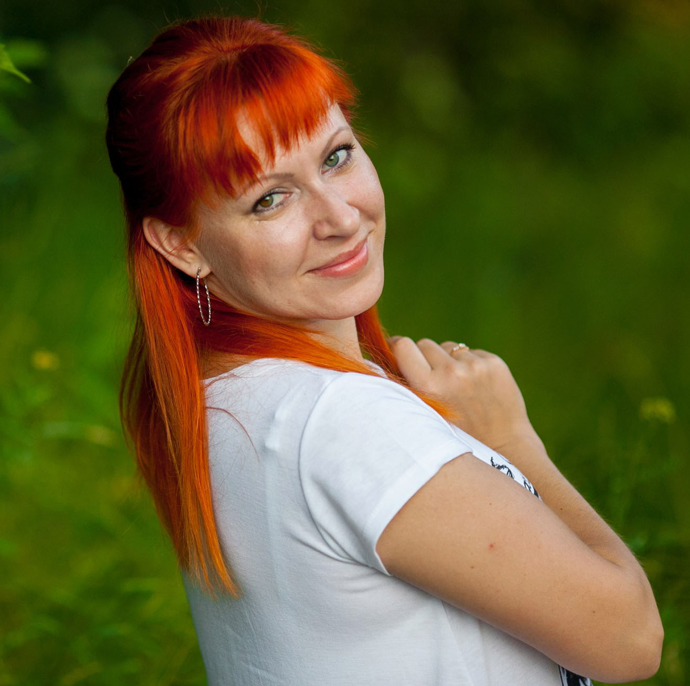

-
Наша свадьба состоялась 4 августа 2017 года. Свадьба была небольшая, 25 человек, свадьба интернациональная (белоруско-украинская) и была она прекрасная только благодаря Марии! Это профессионал своего дела, человек, который всегда знает что делать, который держит в голове все нюансы! Всем гостям очень понравилась работа Марии! Хочется от всей души сказать ей БОЛЬШОЕ СПАСИБО!
-
Хотелось бы оставить отзыв о работе просто потрясающей ведущей Марии Бондарь !!! Профессионал своего дела, с отличным чувством юмора и массой креативных идей. 3 сентября вела нашу свадьбу, за что очень благодарны ей: все было супер, все остались в восторге. Самое главное - атмосфера: никакого волнения и напряжения, отличное взаимодействие с гостями, интересные конкурсы и программа. В общем праздник удался! Спасибо огромное)
-
Маша, огромное спасибо. Нам всё очень понравилось, все просто в восторге. До сих пор и Запорожье и Псков вспоминают нашу свадьбу. Родители тоже благодарят за высокий уровнь проведения праздника. Мы очень довольны, что на нашей свадьбе ведущей была именно ты. Ещё раз спасибо!!!! Ваня и Катя
-
Свадьба была 11.06.2016. и это было так круто!!! и именно благодаря Машеньке!!! столько мелочей-косяков (по нашей, конечно, вине) с разных сторон, которые Маша просто на ходу устраняла, и никто-никто из гостей не заметил!!! а главное, все прошло без стресса, истерик. короче классно!! свадьба у нас была не маленькая (75 гостей), все разного возраста и интересов, но веселились все, как дети! Еще хочу отметить, что когда только первый раз встретились с Машей - узнали, что мы совершенно ничего не знаем про свадьбы, хотя на тот момент побывали уже на многих. Все вопросы находят ответы, все желания исполняются. Наш день был супер!! Спасибо огромное. Это была работа Профессионала с большой буквы!!!
-
Машенька! Ты супер! Большое, огромное тебе спасибо за то, что помогла нашему празднику состояться и превратиться в свадьбу нашей мечты! Очень рады, что жизнь свела нас с таким жизнерадостным, позитивным, милым человеком, как ты! Для нас было большим удовольствием "быть радостными и красивыми" под твоим чутким руководством! Надеемся, что видимся не последний раз, причём не только по работе, так сказать😉 С уважением, признательностью и искренней симпатией, твои Сашка и Лика Гиревы 😊 Надеюсь, дорогие друзья, этого описания будет достаточно для того, чтобы сделать ваш правильный выбор. Если нет, готов ответить на любые вопросы, пишите в личку. Желаю, чтобы ваша свадьба была именно такой, какой вы её себе представляли в своих мечтах. Желаю, любви, мира и взаимопонимания в семье, дорогие молодожены! Удачи!😊
-
Хотим выразить огромную благодарность Марии за проведение нашей выездной регистрации!!! Все прошло на высшем уровне! Все гости были в восторге от вашей команды! Спасибо за слова поддержки в этот волнительный для Нас день! Песню, исполненную Марией, шикарным голосом все гости помнят до сих пор!)) Спасибо за песочную церемонию с замечательными словами,которые затронули души всех присутствующих!)) Вы очень замечательный человечек, с Вами легко и просто! Вся регистрация, благодаря Вам, прошла на одном дыхании! Еще раз СПАСИБО!!!

- Наталья
- Выездная регистрация
-
Машенька, спасибо вам за проведение нашего торжества 25.07.15! Спасибо за наш офигенный, веселый,полный позитива, а главное добрый свадебный вечер!Было много смеха и веселья,благодаря вам в этот вечер ни один гость ни скучал, все были просто в восторге от вас, и по окончанию вечера очень хвалили. Спасибо за ваше умение читать гостей и их настроение, за ваш такой звонкий и искренний вакал (для гостей было сюрпризом живое исполнение), спасибо за конкурсы (конкурс с ремнем до сих пор вспоминается с улыбкой)!!!!
Спасибо, за что вы были с нами в этот вечер!!!
Мы желаем вам творческих успехов и что бы воспоминания о проведенном вечере во главе с вами оставались надолго-надолго у молодоженов и гостей!!!
Кристина и Артур! 💜
-
Маша замечательный и искренний человек, профессиональный ведущий, очень понравилось с ней работать!!! Она настолько живой и активный человечик, что только глядя на ее улыбку создается праздничное настроение, она заряжает весь зал положительной энергетикой!!! Наш праздник _ ДЕЙСТВИТЕЛЬНО СТАЛ НЕЗАБЫВАЕМЫМ!!! Она сумела организовать праздник так, что остались довольны и Молодежь и Более Старшее Поколение!!! А какое многообразие конкурсной программы, Все было просто на ВЫСОТЕ!!! Огромное СПАСИБО Маша тебе и Мужу!!! ВЫ ЛУЧШИЕ !!!
-
Машенька, от себя и от Дениса хотим поблагодарить тебя за нашу свадьбу. Всё было просто супер, мы в восторге. Как мы тебя увидели, то сразу поняли, что ты сможешь сделать наш праздник самым лучшим и незабываемым. Очень понравился твой подход к делу, всё было гораздо лучше чем мы только могли представить. Довольны остались абсолютно все без исключения! Большое...нет огромное тебе спасибо, успехов тебе и удачи! Машуля ты превратила нашу свадьбу просто в сказку! Естественно, мы будем рекомендовать тебя всем своим друзьям и знакомым. Любим и целуем тебя, Денис и Юлия))))))
-
СПАСИБО, СПАСИБО, СПАСИБО огромное.... Машка, не знаю как отблагодарить тебя, все самые хорошие слова, которые я знаю, все можно адресовать тебе! Веселая, добрая, чуткая, ответственная, умная, красивая..... Ты для нас - золотая рыбка, которая осуществила все наши мечты, воплотила в реальность все наши желания и сделала нашу свадьбу незабываемой сказкой, от которой все гости были в восторге!!!! Спасибо!
-
Любимая, дорогая и уже совсем родная Машечка, ты замечательный человек и мастер своего дела!!!Машуля, хочется сказать огромное спасибо за твою работу, спасибо за то, что создала такую веселую, добрую атмосферу, за то что сделала этот день действительно незабываемым !!! О такой позитивной, харизматичной, креативной и красивой ведущей можно было только мечтать.Это тот, человек, которому, можно было позвонить в любое время, она выслушает и поможет. Маша подарила нам и нашим гостям море позитива, улыбок и прекрасного настроения. Все гости были в восторге от такой замечательной ведущей, ее манере общения, таких интересных и креативных конкурсах. Мария- профессионал своего дела. Желаем тебе всего самого самого хорошего!
Мария Бондарь – это самая лучшая тамада, она стала для нас другом.
Если вы еще сомневаетесь в вашем выборе, то смело останавливайте его на Машуле.
Машуля, мы тебя обожаем, ты суперррр)))))))))))))))))))
-
Машка, огромное человеческое спасибо тебе от нас, а также от всех присутствующих на свадьбе гостей, всех до единого, включая самых приверед! Потрясающее чувство аудитории, настроения собравшихся, чуткий индивидуальный подход практически к каждому....А главное, нет никакого давления на людей. Это очень важно. Народ моментально расслабился, почувствовав это и просто отдыхал...А ты лишь корректно и ненавящиво направляла вечер в нужное русло. Это было просто замечательно!
Спасибо тебе еще раз за твой профессионализм! Так держать! Анатолий и Елена! ❤ 💋 💋 💋 💋 💋